--- name: inverse class: center, inverse --- <div style="position: absolute; top: 25% ; text-align: center; width: 100%; left: 0;"> <h1 style="font-size: 7em">MASKINLÆRING</h1></div> ??? Til neste gang: - Jeg tror ikke man skjønte det helt... - det kom litt brått på med utfordringer. - brukte ord og tok opp ting jeg er usikker på om man skjønte -> valideringssett, - mer om nevrale nettverk, etc - mer om hvordan det brukes i verden - kule eksempler - legg inn loop teknologi + forretning og raske sykler for å finne ut om det er verdi i hypotesen - OBS: filmen funket bare på den siden som jeg så. - på eksemplene regresjon og klassifisering: falt ikke helt naturlig å prate så mye - formuler de viktigste setningene i hodet mitt. og underbygg de viktigste poengene i pp -> som parametrene i modellen. - kjør for noen i bekk som kan maskinlæring --- template: inverse <div style="color: white; font-size: 24px; position: absolute; top: 8em; left: 25%; font-family: 'Yanone Kaffeesatz'; opacity: 1"> Hva er maskinlæring? </div> <div class="round" style="position: absolute; top: 13em; left: 25%;" > <img style="width: 105%" src="Bilder/machinelearning.png"/> </div> <div style="color: white; font-size: 24px; position: absolute; top: 8em; left: 66%; font-family: 'Yanone Kaffeesatz'; opacity: 1"> Demo </div> <div class="round" style="position: absolute; top: 13em; left: 60%;"> <img style="width: 210%; left: -4em; top: -0.5em; position: absolute" src="bilder/snapchat.png" /> </div> ??? Agenda: --- template: inverse <div style="color: white; font-size: 24px; position: absolute; top: 8em; left: 25%; font-family: 'Yanone Kaffeesatz'; opacity: 1"> Hva er maskinlæring? </div> <div class="round" style="position: absolute; top: 13em; left: 25%;" > <img style="width: 105%" src="Bilder/machinelearning.png"/> </div> <div style="color: white; font-size: 24px; position: absolute; top: 8em; left: 66%; font-family: 'Yanone Kaffeesatz'; opacity: 0.3"> Demo </div> <div class="round" style="position: absolute; top: 13em; left: 60%; "> <img style="width: 210%; left: -4em; top: -0.5em; position: absolute; opacity: 0.3" src="bilder/snapchat.png" /> </div> ??? Agenda: --- .intro[ .left-column[ .focus[ # Hva er maskinlæring ] # Hva løser maskinlæring # Hvordan håndterer vi utfordringene ] ] ??? Vi har lenge brukt datamaskinenen til oppgaver de gjør bedre enn oss: når vi bruker google maps, søker etter restauranten på tripadvisor eller sender inn en elektronisk søknad, er det til syvende og sist fordi datamaskinen evner å legge sammen to tall raskere enn oss. Nå ser vi en trend, der vi ønsker å bruke datamaskinen på oppgaver vi, i hvert fall tradisjonelt sett tror vi gjør bedre måte enn datamaskinen, som å føre en dialog, gjenkjenne bilder eller velge hva jeg skal spise til lunsj. For når jeg, som et mennekse av kjøtt og blod står i kantinene og skal velge mellom salat eller en varmrett er valget som regel basert på erfaringer med mat jeg har spist tidligere og en god porsjon magefølelse, noe som er veldig vanskelig å overføre til en datamaskin. Derfor gjelder det å gi datamaskinen de samme erfaringene, som i dette tilfellet betyr å presentere datamaskinen for ulike typer mat, og la den ut fra dette generalisere sine egne matpreferanser. --- .intro[ .left-column[ .focus[ # Hva er maskinlæring ] # Hva løser maskinlæring # Hvordan håndterer vi utfordringene ] ] <img style="position: absolute; top: 20em; left: 30em; width: 25%; opacity: 0.7" src="bilder/lasagna.jpg" /> 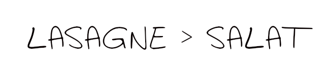 ??? Et erfaring kan være en input som representerer "LASAGN", og en konklusjonen: "BEDRE ENN SALAT" Greit, det hørtes jo enkelt ut! Og for oss mennesker er det jo det, problemet er bare at maskinen vet hverken hva lasagn eller Bedre enn salat betyr. Datamaskinen er som kjent mest glad i tall, så la oss prøve å representere --- .intro[ .left-column[ .focus[ # Hva er maskinlæring ] # Hva løser maskinlæring # Hvordan håndterer vi utfordringene ] ] 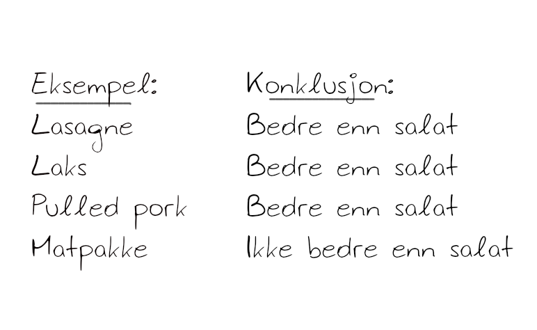 ??? Det å skulle representere konklusjonene er det enkleste, det er en boolsk variabel, der 1 er bedre enn salat. Og la oss nå representere rettene med en rekke tallverdier, som kan angi i hvilken grad retten er søt, salg, bitter eller sur. -- 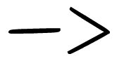 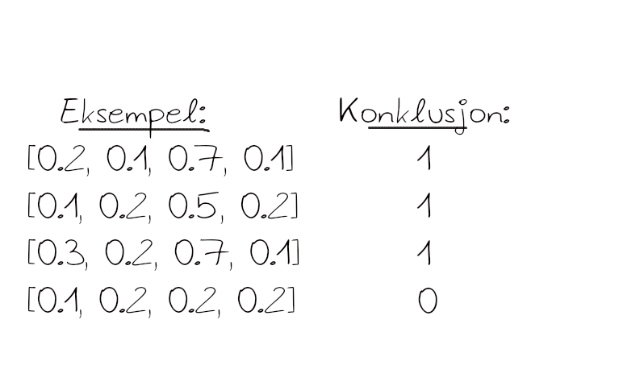 ??? Da kan de representeres f.eks sånn som dette. Disse erfaringene brukes i læringsprosessen, der datamskinen skal forme en modell som forklarer hvordan hvert eksempel fører til sin konklusjon. Det er vi som utviklere som definerer den overordnede arkitekturen til modellen, men frihetsgradene ligger i parametrene. læringsprosessen går ut på å finne det beste settet med parametre, slik at modellen er generisk nok til å håndtere en rett som datamaskinen ikke har blitt presentert for tidligere. --- .intro[ .left-column[ .focus[ # Hva er maskinlæring ] # Hva løser maskinlæring # Hvordan håndterer vi utfordringene ] ] 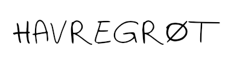 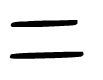 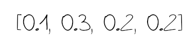 -- 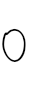 -- <img style="position: absolute; top: 19.5em; left: 29em; width: 43%; opacity: 1" src="bilder/sad.png" /> 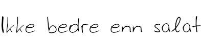 ??? Når læringsprosessen er ferdig og modellen er bygget, skal vi kunne gi modellen en rett, og modellen gir oss konklusjonene. --- .intro[ .left-column[ .focus[ # Hva er maskinlæring ] # Hva løser maskinlæring # Hvordan håndterer vi utfordringene ] ] 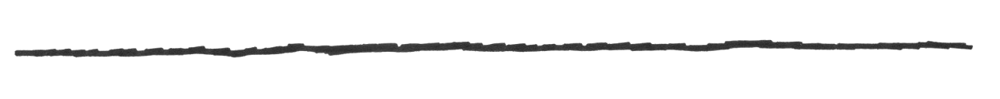 ??? Ettersom data representeres med tall, ser vi at maskinen egentlig ikke bryr seg om den semantiske tolkningen av lasagne. OG det er det som skiller maskinlæring fra de tradisjonelle metodene innenfor analyse. Vi trenger ikke være domeneeksperter som kan lage håndskrevne regler skreddersydd til hvert enkelt problem. Vi trenger ikke gjøre antagelser om hvilken sammenheng det er i datasettet. Vår oppgave er å lage en genersik alg. som selv skal komme frem til et spesifikt refelsettt tilapsset det aktuelle problemet. --- .intro[ .left-column[ .focus[ # Hva er maskinlæring ] # Hva løser maskinlæring # Hvordan håndterer vi utfordringene ] ] 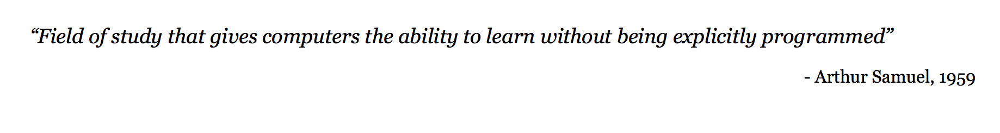 ??? Men - jeg skal ta selvkritikk når jeg sier at det er moderne. I 1959 definerte Arthur Samuel maskinlæring, og jeg kunne ikke sagt det bedre selv i dag. Mye av grunnen til at det er nå hypen er kommet er regnekraften og de enorme datamengdene vi har akkumulert over tid. --- 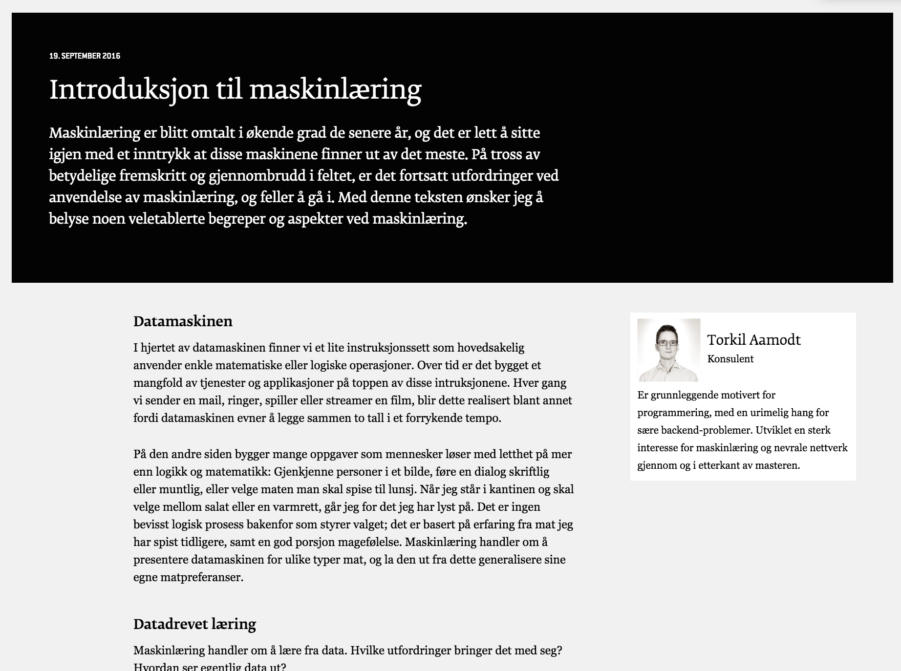 ??? Dette eksempelet er hentet fra en bloggpost på bekk open der torkil gir en god introduksjon til maskinlæring. En bloggpost jeg absolutt vil anbefale om du er nysgjerrige på faget. --- .intro[ .left-column[ # Hva er maskinlæring .focus[ # Hva løser maskinlæring ] # Hvordan håndterer vi utfordringene ] ] ??? Okey, jeg håper det ga et bilde for dere som ikke har vært borti maskinlæring før. Men det er nok likevel for mange et ganske stort og ubegrupelig tema, så la oss bryte det ned. -- 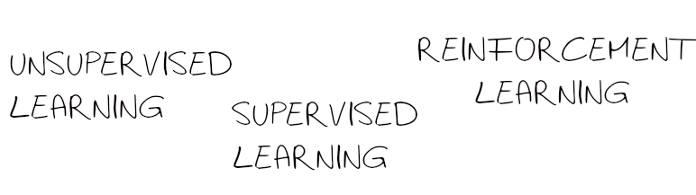 ??? Nå man snakker om læringsmetoder i maskinlæring deler man gjerne inn tre: (I mangel på gode norske ord.) Lunsj-eksempelet vårt havner inn i Supervised learning, det er problemene der maskinen får hjelp til å lære ved å få eksempler og konklusjonen er tilgjengelig i et treningsdatasett. Unsupervised learning er motstykket til supervised learning. Da gir man datamaskinen eksempler, men ikke hva det fører til. Så er det opp til datamaskinen å gruppere dataen på den måten han finner det logisk. I lunsj-eksempelet vil han f.eks. gruppere matretter etter smak, men det resulterer ikke nødvendigvis i et skille mellom hva som er bedre eller ikke bedre enn salat. I Reinforcement learning snakker vi ikke lenger om eksempler. Det er grenen av modeller hvor man ikke vet hva utfallet er før man har gjort en handling. Dette illustreres best med denne filmen: --- template: inverse <video style="position: absolute; bottom: 3em; left: 2em; width: 90%;" controls="controls"> <source src="bilder/pancake.mp4" type="video/mp4"> </video> ??? Her er det sensorer på pannekaken og kameraer i rommet som fanger opp hvor pannekaken lander. For hvert kast regitrerer datamaskinen bak armen hvor nære pannekaken var å lande i pannen, og justerer vinkel og kraft etter dette. --- .intro[ .left-column[ # Hva er maskinlæring .focus[ # Hva løser maskinlæring ] # Hvordan håndterer vi utfordringene ] ] -- ??? Men selv om de robotene er utrolig underholdende, så er det Det er supervised learning som er mest relevant fordi da har du kontroll på hva du vil at konklusjonen skal inneholde. -- ??? Det kan vi igjen dele inn i to undergrupper. Klassifisering er: Nå man vil kategorisere, som f.eks. i lunsj-eksempelet der noe enten var bedre eller ikke bedre enn salat. Generelt godt eksempel: Anbefalingstjenestene på Netflix og Amazon. F.eks. nå når jeg har bin-watchet hele prison break i helgen, får jeg tilbud om andre serier som også ble klassifisert som "10 år gamle serier med alt for mange sesonger som aldri klarte å finne en god avslutning" Skal vi trekke paralleller til bank-sektoren og SB1 har dere et enormt potensiale etterosm dere sitter på enomrt mye kundedata. DA kunne man f.eks. tenke se at man tilpasser tilbud på samme måte som netflix tilpasser anbefalte filmer. Regrejson er: når du ikke vil ha en diskret oppdeling, men en kontinuerlig. Feks. hvor mye bedre eller dårligere er varmrettet sammenlignet med salat? Generelt eksempel: treningssenter predikerer når du kommer til å si opp abonnentet ditt, basert på hvor gammel du er, hvikle timer du setter opp på. Eksempel hos dere: bank: når kunder sier opp kundeforholdet sitt. --- .intro[ .left-column[ # Hva er maskinlæring # Hva løser maskinlæring .focus[ # Hvordan håndterer vi utfordringene ] ] ] .intro[ .right-column[ ### For god på lasagne og laks ] ] ??? Modellen kan bil for god til å kjøre på treningssettete sitt. Dette skjer når modellen trener for lenge, så evner den ikke lenger å generalisere. Det vil si at han blir enormt god på å fortså seg på laks og lasagne, men det koster dyrt den dagen modellen blir presentert for noe nytt som f.eks. havregrøt. -- 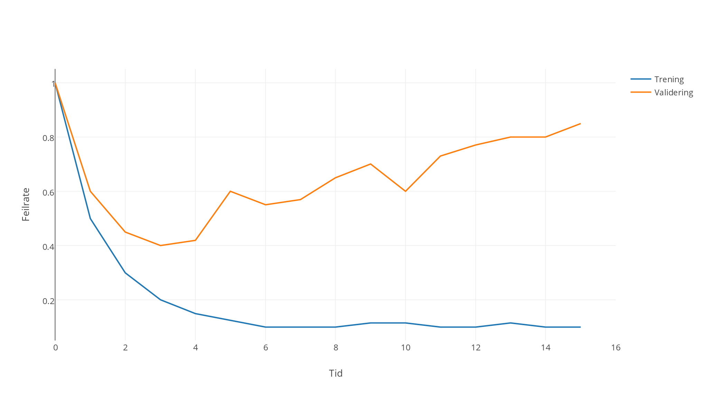 ??? Det kalles overfitting. For å unngå dette deler vi datasettet inn i tre deler. en del trenes på, dvs. at modellen tilpasser seg denne dataen. en del valideres modellen mot underveis og man stopper treningen når resultatet på valideringssettet ikke blir bedre. Man evaluerer modellen på den siste delen av datasettt, som modellen da aldri har sett før. --- .intro[ .left-column[ # Hva er maskinlæring # Hva løser maskinlæring .focus[ # Hvordan håndterer vi utfordringene ] ] ] .intro[ .right-column[ ### For god på lasagne og laks ### Alt er bedre enn salat ] ] ??? --- .intro[ .left-column[ # Hva er maskinlæring # Hva løser maskinlæring .focus[ # Hvordan håndterer vi utfordringene ] ] ] .intro[ .right-column[ ### For god på lasagne og laks ### Alt er bedre enn salat ### Modellen blir aldri bedre enn datasettet ] ] ??? Selv ikke maskinlæring kan lage gull av gråsten. Spesielt med lite datasett kan det bli et problem at modellen finner korrelasjoner som absolutt ikke er meningen. Som f.eks. -- 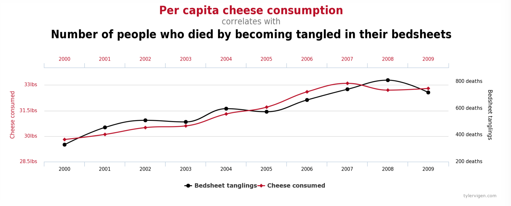 -- 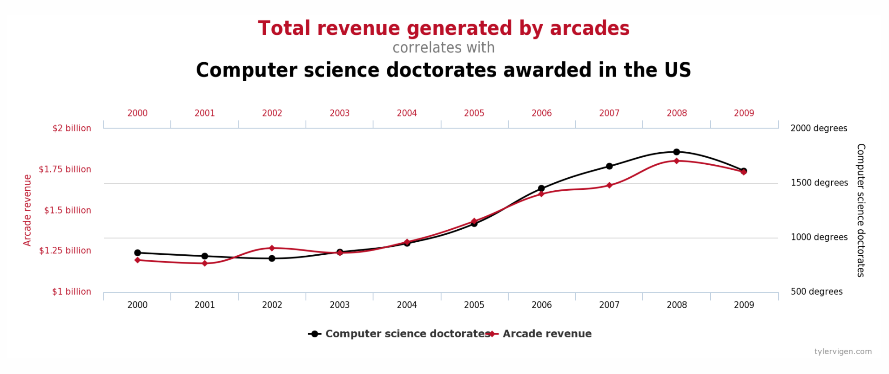 -- 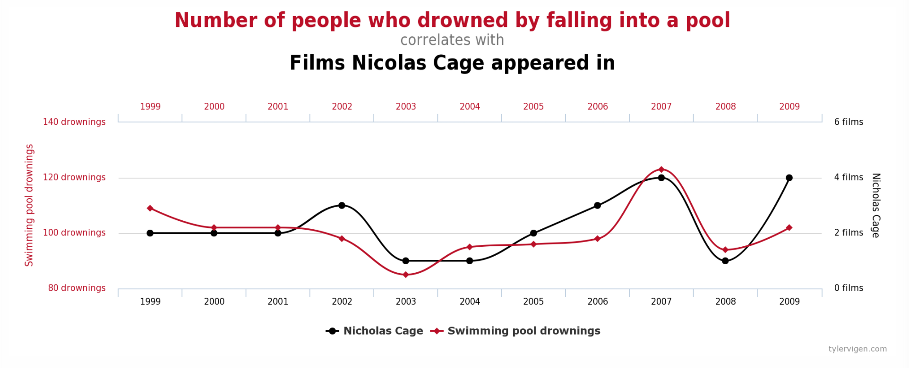 ??? Hva gjør vi med det? Bruker hodet, Vi må vurder om man har et tilstrekkelig godt datagrunnlag. Tett kobling teknolgoi og fortning raskest mulig finne ut om det er gull eller gråsten --- template: inverse <div style="color: white; font-size: 24px; position: absolute; top: 8em; left: 25%; font-family: 'Yanone Kaffeesatz'; opacity: 0.3"> Hva er maskinlæring? </div> <div class="round" style="position: absolute; top: 13em; left: 25%;" > <img style="width: 105%; opacity: 0.3" src="Bilder/machinelearning.png"/> </div> <div style="color: white; font-size: 24px; position: absolute; top: 8em; left: 66%; font-family: 'Yanone Kaffeesatz'; opacity: 1"> Demo </div> <div class="round" style="position: absolute; top: 13em; left: 60%;"> <img style="width: 210%; left: -4em; top: -0.5em; position: absolute" src="bilder/snapchat.png" /> </div> ??? Vi har flere på huset som er veldig interssert i maskinlæring, og vi har gjort et par stunt, og noe av det tror jeg er interessant for dere, og som jeg derfor har lyst til å ta med nå. Men først - jeg er nysgjerrig på om dere har noen eksempler på hvor dere kan bruke maskinlæring? --- <div style="color: black; font-size: 24px; position: absolute; top: 8em; left: 20%; font-family: 'Yanone Kaffeesatz'; opacity: 1"> Sentimentanalyse </div> <div class="round-big" style="position: absolute; top: 13em; left: 7%;" > <img style="width: 155%; opacity: 1" src="Bilder/words.jpg"/> </div> <div style="color: black; font-size: 24px; position: absolute; top: 8em; left: 66%; font-family: 'Yanone Kaffeesatz'; opacity: 1"> Personalisert marketing </div> <div class="round-big" style="position: absolute; top: 13em; left: 57%;"> </div> ??? To eksempler --- ??? La oss si at vi ønsker å ta tempen på Trump på twitter Da kan vi faktisk bruke google sin innebygde maskinlæringstjeneste for å analysere språk. Her er det fantasien som setter grenser: - restaurantanmeldelser Jeg har hørt om prosjetket deres "HEI"-appen. Hvor dere snakker om å gjøre appen mer intelligent ved hjelp av maskinlæring. Språkanalyse, for å forstå hva det snakkes om, er jo en essensiell del her. Dette viser hvor enkelt det er å komme igang med om amn bruker teknologier som allerede finnes. --- 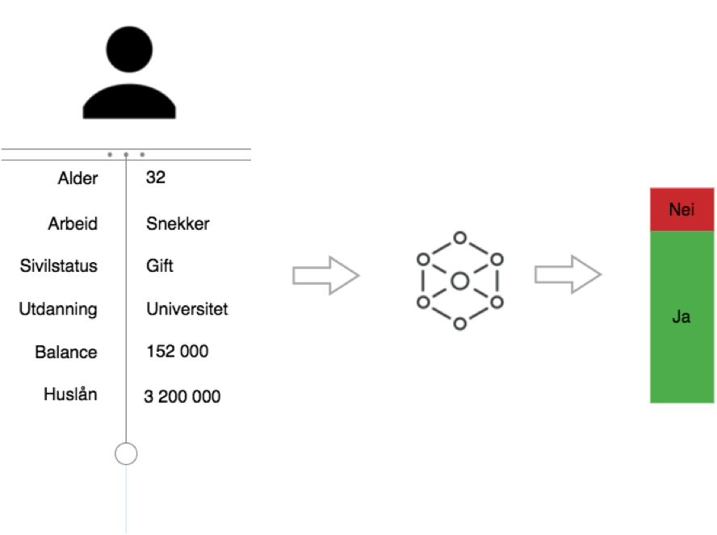 ??? Det andre eksempel er et proof of concept vi gjorde her på huset tidligere i høst, som gikk ut på å personalisere tilbud til kunder. Vi fant et datasett til en nederlands bank med informasjon om deres kunder og hvorvidt de hadde kjøpt et produkt banken tilbø dem for en stund tilbake. (I en by) Nå ønsker banken å selge et lignende produkt til en ny kundegruppe, og ønsket å finne ut hvem som har høyest sannsynlighet til å kjøpe dette produktet,slik at man kan rette seg direkte til denne gruppen. Vi ønsker da å lage en modell, som tok inn input som alder, kjønn, ... og ønsket et svar med hvor stor sannsynlighet vil vedkommende takke ja. Jeg tenke vi kunne trene den nå. Som sagt har vi delt inn settet i tre: trening, validering, test. Det modellen gjør er å lese inn en del av treningssettet. Så prøver han å gjøre en predikasjon på disse, og evaluerer hvor feil han er sammenlignet med fasiten. Deretter justerer han parameterne for å minimere feilen mest mulig. Deretter velger han en ny del av treningssettet, og gjentar prosessen. OG slik fortsetter det så lenge modellen forbedres på valideringssettet, som er den øverste av disse plottene. Til slutt måler vi hvor god modellen er på testsettet. --- template: inverse <div style="height: 100%; display: flex;align-items: center;justify-content: center; "><img style="align: center; width: 15%" src="bilder/bekk.png" /></div>